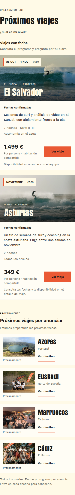
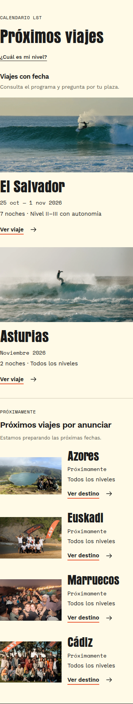
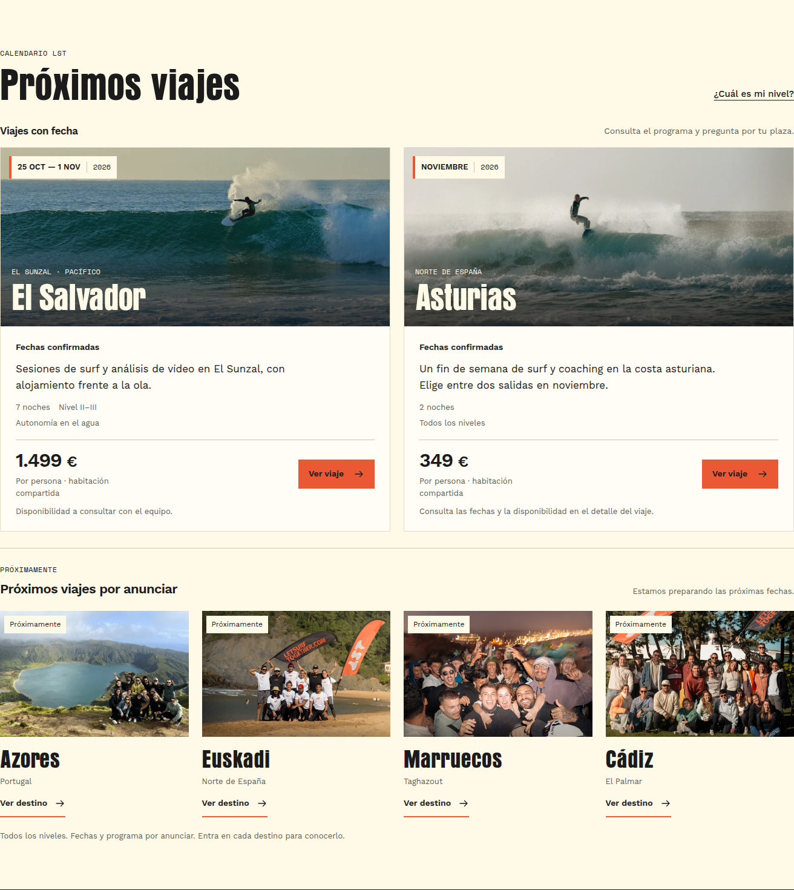
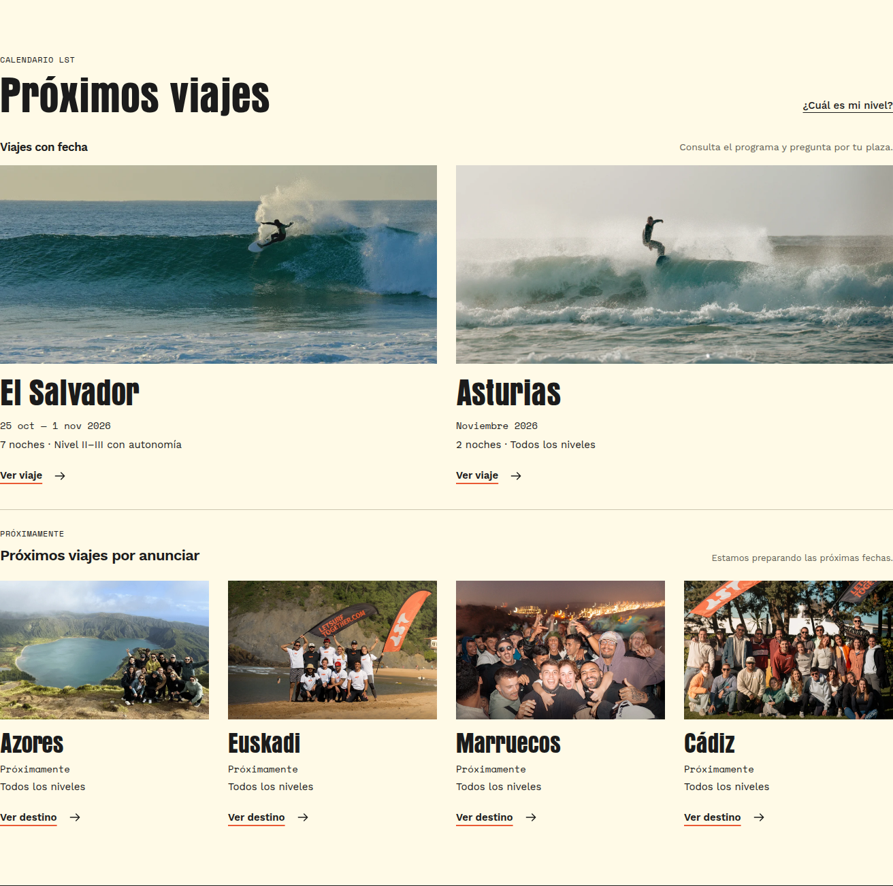

Comparación del checkout antes de la tarea con la implementación final.




Capturas reales de la sección de viajes. Se oculta únicamente la cabecera fija durante la captura de sección para evitar que tape las tarjetas; las capturas de foco conservan la cabecera real. Pulsa una imagen para verla completa a su resolución original.